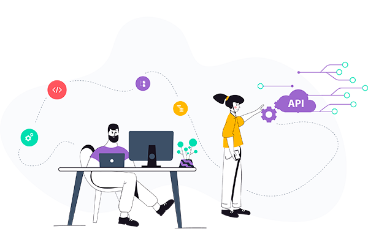

프로젝트 진행 단계
소프트웨어를 개발을 시작하려는 사회 초년개발자들은 소프트웨어 라이프 사이클에 익숙하지 안습니다. 업무를 시작하면 프로젝트에 참가하고, 프로젝트는 하나의 라이프 사이클이 존재하고, 투자에 대한 아웃풋과 기간이 분명히 정해져 있습니다. 프로젝트 라이프 사이클 단계를 보면 요청 단계, 제안서 작성 단계, 프로젝트 시작 단계, 그리고 프로젝트 수행 단계, 프로젝트 종료 단계가 있습니다.
첫 번째로 고객 요청 단계에서는 RFP(Request for Proposal)를 고객으로부터 받아요. RFP는 발주자가 특정 과제의 수행에 필요한 요구사항을 체계적으로 정리하여 제시함으로써 제안자가 제안서를 작성하는데 도움을 주기 위한 문서입니다. RFP는 다음 항목을 포함하고 있습니다.
- 사업 개요 :
사업 배경 및 목적, 사업 기간과 범위 - 제안 요청 내역 : 사업 방향, 사업 상세 내역
- 입찰 요령 : 평가 항목
수주업체는 발주자가 작성한 RFP를 확인 후, 제안서를 작성할 수 있습니다. 결국 고객이 작성한 RFP를 어떤 식으로 구현하겠라는 계획을 제안서로 제출합니다. 그래서 이 RFP를 가지고 pm이 가서 설명을 하고 제안을 하는 거죠. RFP에 대해서 어떤 식으로 해결할지에 대해 자기의 회사만의 가진 장점들(기술, 노하우 등)을 가지고 방안들을 설명합니다. 발주자는 수주업체의 개발 경험이나 기술적 특징들을 확인하고 분석할 목적으로 제안서를 제출 받습니다.

RFP 분석후, 제안서 작성과 전달
애플리케이션을 어떤 식으로 구축할 것인지, 마이그레이션을 어떻게 할 것인지, 유지 보수를 어떻게 할 수 있는 지도 고려해 볼 수 있지만 프로젝트 이후 까지를 고려하는 것은 꽤나 어렵고 답이 없습니다. RFP는 고객이 제안하고, RFP를 받은 개발사는 RFP를 분석해 어떤 도메인에 한정해 제안서를 작성하게 됩니다.
[제안서 프로세스]
- 제안 준비 : 제안팀 구성, 제안 일정 수립
- 제안 내용 도출 : 사업의 본질 이해, 제안 방향 수립, 고객 요구 분석, 해결책 입안
- 제안서 작성 : 제안서 목차 구성, 제안서 작성
- 제안 발표 : 발표 스토리 구성, 발표 자료 작성, 리허설, 제안 발표
첫 번째로 제안서를 작성할 때는 간결하게 의사를 전달하는 것이 중요합니다. 개발자들은 간결한 의사 전달에 어려움을 느끼고 있죠 고객이 이해할 수 있는 언어 그러니까 고객이 이해할 수 있는 언어로 설명을 해야 하는 거죠. 대신 딱 중요한 언어들 기술적인 언어들은 정확한 언어로 표현하는 것이 필요합니다. 예를 들어 세리 같은 삼성경제 연구원 사이트의 연구 보고서들을 보면 어휘 공부할 때 도움이 될 만한 문서들이 많이 있습니다.
두 번째로 그림으로 잘 표현을 해야 돼요 어떤 개념들을 설명할 때는 텍스트보다는 그림으로 설명하는 것이 쉬울 수 있습니다. 외국의 컨설팅 회사를 보면 그 어려운 개념들을 그림으로 표현해서 그 설루션을 제안하는 그런 형태의 컨설팅 회사들이 많이 있습니다. 예를 들어서 가트너 그룹의 자료나 전공 문서들을 보면 그렇고요 기본적인 개념을 그림으로 표현하는데 능숙해져야 되는 거죠. 그래서 물론 이 그림으로 표현한 것에 익숙하지 않다면 남이 해놓은 것들의 그림을 참고해서 약간 베끼기라도 하듯이 해서 그림을 넣는 것이 필요합니다. 기본적으로 맞춤법 검사가 필요하고, 전체적으로 제안서 완성 되면, 제안서를 이용해 발표를 합니다
결국에는 프로젝트를 맡아서 진행하는 그 업무는 개발일만 잘한다 라고 해서 할 수 있는 건 아닙니다. 구현 능력도 중요한 일이지만 개발자가 되고 나서 꼭 필요한 것들이 이러한 발표하는 능력 그림으로 자료를 작성하는 능력 그리고 의사소통하는 능력들이 필요합니다. 프로젝트를 시작하게 되면 보통 이제 WBS(Work Breakdown Structure)를 작성 합니다. 이러한 작업들은 보통 PM이나 PMO(project management office)가 주로 합니다. 프로젝트는 상위 레벨의 작업이 있고 하위 레벨의 작업들이 있습니다. WBS 작성시 프로젝트의 인프라스트럭처를 구성하고 각 팀원들이 어떠한 역할을 해야 되는지, 그리고 팀원들이 개발할 때 어떤 도구들을 설치해서 어떠한 방식으로 프로젝트를 진행할 것인지를 설계를 하고 팀원이 준수해야 할 프로젝트 프로세스를 수립하여 교육을 하여서 진행합니다. 이러한 과정들이 모두 끝나게 되면 프로젝트가 공식적으로 시작되었음을 알리는 킥오프 미팅을 합니다. 킥오프 미팅에는 프로젝트의 배경, 목표, 추진 방법 등 실무진 실무 리더(PL)들과 PM 그리고 고객사의 주요 임원들에게 발표를 합니다. 프로젝트를 수행을 하게 되면 각자 참여한 참여자는 자신의 역량을 최대한 발휘해서 프로젝트가 좋은 성과를 낼 수 있도록 노력해야 됩니다.
프로젝트 진행중 문서화 작업
프로젝트를 진행하는 동안 중요한 점은 프로젝트 진행 과정상에 문서와 자료들도 중요합니다. 소스 코드보다는 이 해당 소스 코드를 설명한 그 문서가 중요할 수 있습니다. 산출물에 대해서 굉장히 부담일 수 있습니다. 어떤 산출물도 소스 코드처럼 어느 정도 품질에 관여를 하는 부분이 있기 때문이에요. 이러한 중간 산출물들을 작성하고 품질을 유지하는 이유는 결국 최종 프로젝트의 품질을 유지하고 개선하기 위한 목적입니다. 그래서 코딩 작업을 하면서 현재 상황을 잘 기술해서 문제점들을 잘 정리하고 이 문제점들을 어떻게 개선할 수 있을지, 만약에 당장에 개선되지 않는다면 미래에 이 문제점을 어떻게 개선을 할 수 있을지에 대해서 또는 추후에 어떤 과업으로 잘 정리해놓는 것이 좋습니다. 이러한 문서화 작업이라는 것이 테크니컬 라이터라는 직무가 따로 있긴 합니다.
테크니컬 라이터 같은 경우는 프로젝트에 대한 전반적인 기술 작업들을 하지만 실무적인 깊이까지를 테크니컬 라이터가 기술하지는못합니다. 그래서 이 세부적인 기술 사항들을 잘 기술해서 테크니컬 라이터가 잘 종합해서 정리할 수 있게끔 실무자가 직접 실무 적인 깊이까지를 고려해서 문서를 작성해 두는 것이 필요합니다.
프로젝트는 결국 어떤 프로젝트 종료일이 있습니다. 납기일이라고 하는데 이것을 지키는 것이 쉬운 일은 아닙니다. 납기일을 지키려다 보면 건강도 나빠지게 되고 원치 않게 무리를 하게 됩니다. 프로젝트마다 이런 일이 반복이 되는 이유에 대해 생각해 보면 프로젝트 설계 단계에서 계획이 실제로 진행하는 그 과업에 비해 디테일하게 작성이 되어있지 않습니다. 그래서 프로젝트는 웹사이트 개발이 1개월부터 3개월까지다 이런 식으로 기간을 한정해서 생각을 하게 됩니다. 그렇다 보면 계획이 허술하게 되고 결국 실제로 적용해 보니까 계획이 허술하니까 일정에 쫓기게 됩니다. 기능 범위가 정확히 정의되지 않은데 프로젝트를 완성하려다 보니까 이 기능 범위 범위와 기능이 추가되면서 프로젝트 지연이 되기도 합니다. 이러다 보니 개발자는 야근을 하게 됩니다. 고객들은 왜 이 기간이 늘어나는지를 이해를 못 합니다. 그 고객이 이 프로젝트의 기능을 스스로 줄이거나 하지는 않아요.
S/W 라이프 사이클 모델 적용
큰 프로젝트일수록 무엇보다 역할을 잘 나누는 것이 중요합니다. 프로젝트가 작을 때는 나의 일과 상대 일을 경계 없이 진행할 수도 있습니다. 그 프로젝트가 커지면 커질수록 역할 정의가 중요해집니다. 그래서 큰 프로젝트일수록 R&R(Role and Responsibilities)에 입각해서 일을 진행하는 것이 중요하고, 해당 역할을 잘 수행할 수 있는 사람이 해당 R&R을 맡는 것이 필요합니다. 프로젝트는 기한이 정해져 있어 전반적으로 굉장히 바쁩니다. 시행착오를 겪게 되고 그래서 이 프로젝트를 어떻게 하면 원활히 잘 진행하는 방법과 관련한 소프트웨어 라이프 사이클 방법론이 많이 나와 있습니다. 전통적으로 폭포수 모델, 프로토타입 모델, 나선형 모델, 반복적 모델이 있습니다. 이후에 나온 모델이 애자일 모델이 있습니다. 애자일 모델은 XP, 스크럼, 칸반, Lean과 같은 하위 개발 방법 등을 포함하고 있습니다. 고객이 요구하는 바를 보다 잘 수용할 수 있도록 일정한 주기를 반복하면서 개발하는 모델입니다. 어떤 점들을 개선할 수 있을지를 좀 더 고민해서 개선할 수 있는 방안들을 적용해서 성공적으로 프로젝트를 잘 진행할 수 있었으면 좋겠습니다.